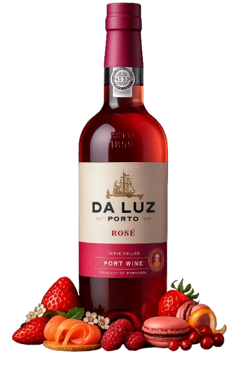
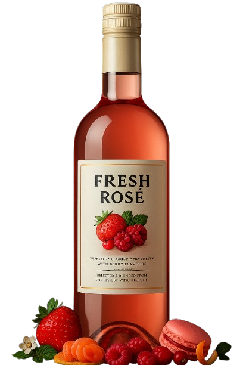

nutrition
fresco
psychiatry
suave
cloud
leve
Porto Da Luz Rosé
Delicadeza e frescor em perfeita sintonia
De cor rosada brilhante com reflexos sutis, Da Luz Porto Rosé revela aromas envolventes de morango, framboesa e cereja, com um toque floral delicado. Na boca, é leve e equilibrado, com doçura suave e um frescor que prolonga o prazer a cada gole. Ideal para servir bem gelado, em momentos leves e celebrações descontraídas.
shopping_bag
comprar
reviews
avaliações

A maioria dos nossos vinhos possuem selo DOCG
D.O.C.G

Fresh Rosé
Elaborado para capturar a essência do verão em cada taça.
Elegante, fresco e delicadamente frutado, com notas de morango, framboesa e cereja.
shopping_bag
comprar
reviews
avaliações
Formulário de Recomendação Personalizada
Preencha os campos abaixo para receber recomendações personalizadas de vinhos por e-mail.